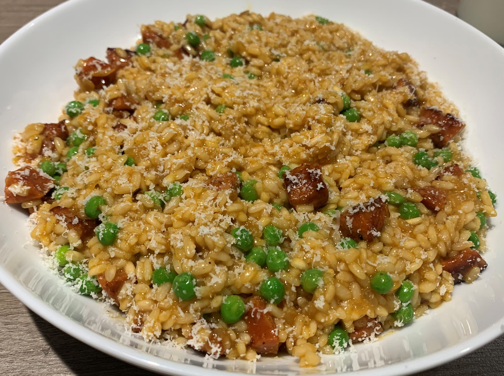

Risotto originated in Northern Italy, and is a rice dish which is cooked using stock until a creamy consistency is reached. This dish uses a specific type of rice which absorbs liquid, allowing it to soak up the all the flavours that have been added. This is a major factor in Risotto's popularity, as it bursts with flavour with every bite. Arborio, Carnaroli, Maratelli, and Vialone Nano are some varieties of rice that are most commonly used in Risotto due to their high starch content.
Watch the video below for the perfect example of how to make a Risotto!
Below, is a picture of my finished Tom Kha. As you can see, my version is quite a clear soup. Not using coconut milk allowed for this thinner consistency which I chose due simply to preference. The lime leaves especially add a huge flavour and fragrance to this dish, making it a very pleasant experience to cook as well as to eat. I would highly recommend this dish due simply to it's bold flavours. Hover over the image to enlarge!
Click the button below to keep track of the number of times you have made the dish on this page. The number of times you click the button will be stored for the next time you come back to the site!